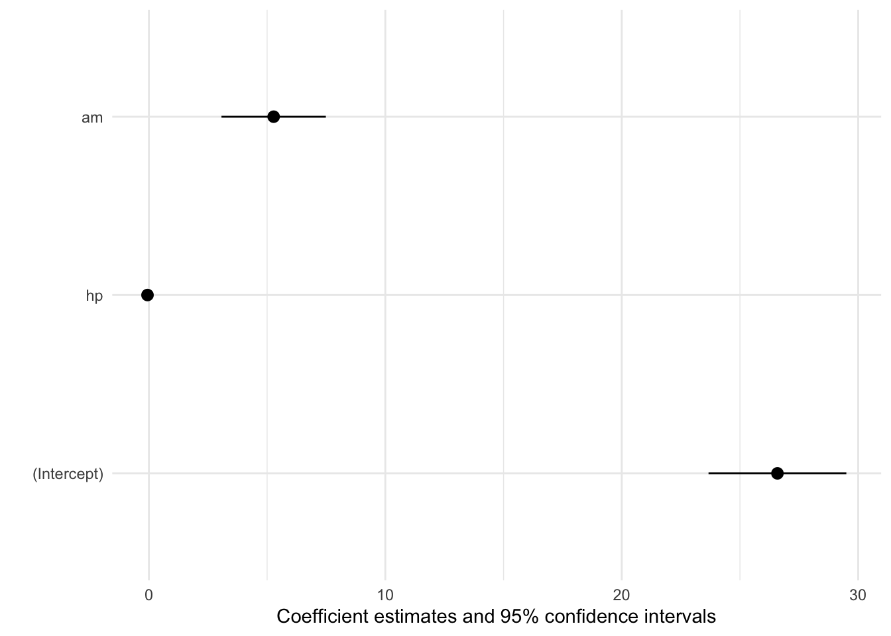

Model Summaries
modelsummary includes a powerful set of utilities to customize the information displayed in your model summary tables. You can easily rename, reorder, subset or omit parameter estimates; choose the set of goodness-of-fit statistics to display; display various “robust” standard errors or confidence intervals; add titles, footnotes, or source notes; insert stars or custom characters to indicate levels of statistical significance; or add rows with supplemental information about your models.
Before starting, we set a few CSS properties to make tables more display in a more compact format on this website. This step is optional.
```{css, echo=FALSE}
.table, th, td {
font-size: 0.9em;
}
.table tbody td, .table thead tr {
white-space: nowrap;
}
```Now, we download data, fit some models, and summarize them in a table using the modelsummary() function:
library(modelsummary)
url <- 'https://vincentarelbundock.github.io/Rdatasets/csv/HistData/Guerry.csv'
dat <- read.csv(url)
models <- list(
"OLS 1" = lm(Donations ~ Literacy + Clergy, data = dat),
"Poisson" = glm(Donations ~ Literacy + Commerce, family = poisson, data = dat),
"OLS 2" = lm(Crime_pers ~ Literacy + Clergy, data = dat)
)
modelsummary(models)| OLS 1 | Poisson | OLS 2 | |
|---|---|---|---|
| (Intercept) | 7948.667 | 8.241 | 16259.384 |
| (2078.276) | (0.006) | (2611.140) | |
| Literacy | -39.121 | 0.003 | 3.680 |
| (37.052) | (0.000) | (46.552) | |
| Clergy | 15.257 | 77.148 | |
| (25.735) | (32.334) | ||
| Commerce | 0.011 | ||
| (0.000) | |||
| Num.Obs. | 86 | 86 | 86 |
| R2 | 0.020 | 0.065 | |
| R2 Adj. | -0.003 | 0.043 | |
| AIC | 1740.8 | 274160.8 | 1780.0 |
| BIC | 1750.6 | 274168.2 | 1789.9 |
| Log.Lik. | -866.392 | -137077.401 | -886.021 |
| F | 0.866 | 18294.559 | 2.903 |
| RMSE | 5740.99 | 5491.61 | 7212.97 |
output
The output argument determines the type of object returned by modelsummary and/or the file where this table should be written.
If you want to save a table directly to file, you can type:
modelsummary(models, output = "table.docx")
modelsummary(models, output = "table.html")
modelsummary(models, output = "table.tex")
modelsummary(models, output = "table.md")
modelsummary(models, output = "table.txt")
modelsummary(models, output = "table.png")If you want a raw HTML, LaTeX, or Markdown table, you can type:
modelsummary(models, output = "html")
modelsummary(models, output = "latex")
modelsummary(models, output = "markdown")If you to customize the appearance of your table using external tools like gt, kableExtra, flextable, or huxtable, you can type:
modelsummary(models, output = "gt")
modelsummary(models, output = "kableExtra")
modelsummary(models, output = "flextable")
modelsummary(models, output = "huxtable")Warning: When a file name is supplied to the output argument, the table is written immediately to file. If you want to customize your table by post-processing it with an external package, you need to choose a different output format and saving mechanism. The saving function differs from package to package:
-
tinytable: setoutput="tinytable", post-process your table, and use thetinytable::save_tt()function. -
gt: setoutput="gt", post-process your table, and use thegt::gtsave()function. -
kableExtra: setoutputto your destination format (e.g., “latex”, “html”, “markdown”), post-process your table, and usekableExtra::save_kable()function.
For example:
library(tinytable)
modelsummary(models, output = "tinytable") |>
style_tt(i = 1, background = "pink") |>
save_tt("table.html")fmt
The fmt argument defines how numeric values are rounded and presented in the table. This argument accepts three types of input:
- Integer: Number of decimal digits
- User-supplied function: Accepts a numeric vector and returns a character vector of the same length.
-
modelsummaryfunction:fmt_decimal(),fmt_significant(),fmt_sprintf(),fmt_term(),fmt_statistic,fmt_identity()
Examples:
mod <- lm(mpg ~ hp + drat + qsec, data = mtcars)
# decimal digits
modelsummary(mod, fmt = 3)
# user-supplied function
modelsummary(mod, fmt = function(x) round(x, 2))
# p values with different number of digits
modelsummary(mod, fmt = fmt_decimal(1, 3), statistic = c("std.error", "p.value"))
# significant digits
modelsummary(mod, fmt = fmt_significant(3))
# sprintf(): decimal digits
modelsummary(mod, fmt = fmt_sprintf("%.5f"))
# sprintf(): scientific notation
modelsummary(mod, fmt = fmt_sprintf("%.5e"))
# statistic-specific formatting
modelsummary(mod, fmt = fmt_statistic(estimate = 4, conf.int = 1), statistic = "conf.int")
# term-specific formatting
modelsummary(mod, fmt = fmt_term(hp = 4, drat = 1, default = fmt_significant(2)))
modelsummary(mod, fmt = NULL)Custom formatting function with big mark commas:
modf <- lm(I(mpg * 100) ~ hp, mtcars)
f <- function(x) formatC(x, digits = 2, big.mark = ",", format = "f")
modelsummary(modf, fmt = f, gof_map = NA)| (1) | |
|---|---|
| (Intercept) | 3,009.89 |
| (163.39) | |
| hp | -6.82 |
| (1.01) |
In many languages the comma is used as a decimal mark instead of the period. modelsummary respects the global R OutDec option, so you can simply execute this command and your tables will be adjusted automatically:
options(OutDec=",")estimate
By default, modelsummary prints each coefficient estimate on its own row. You can customize this by changing the estimate argument. For example, this would produce a table of p values instead of coefficient estimates:
modelsummary(models, estimate = "p.value")You can also use glue string, using curly braces to specify the statistics you want. For example, this displays the estimate next to a confidence interval:
modelsummary(
models,
fmt = 1,
estimate = "{estimate} [{conf.low}, {conf.high}]",
statistic = NULL,
coef_omit = "Intercept")| OLS 1 | Poisson | OLS 2 | |
|---|---|---|---|
| Literacy | -39.1 [-112.8, 34.6] | 0.0 [0.0, 0.0] | 3.7 [-88.9, 96.3] |
| Clergy | 15.3 [-35.9, 66.4] | 77.1 [12.8, 141.5] | |
| Commerce | 0.0 [0.0, 0.0] | ||
| Num.Obs. | 86 | 86 | 86 |
| R2 | 0.020 | 0.065 | |
| R2 Adj. | -0.003 | 0.043 | |
| AIC | 1740.8 | 274160.8 | 1780.0 |
| BIC | 1750.6 | 274168.2 | 1789.9 |
| Log.Lik. | -866.392 | -137077.401 | -886.021 |
| F | 0.866 | 18294.559 | 2.903 |
| RMSE | 5740.99 | 5491.61 | 7212.97 |
Glue strings can also apply R functions to estimates. However, since modelsummary rounds numbers and transforms them to character by default, we must set fmt = NULL:
m <- glm(am ~ mpg, data = mtcars, family = binomial)
modelsummary(
m,
fmt = NULL,
estimate = "{round(exp(estimate), 5)}",
statistic = "{round(exp(estimate) * std.error, 3)}")| (1) | |
|---|---|
| (Intercept) | 0.00136 |
| 0.003 | |
| mpg | 1.35938 |
| 0.156 | |
| Num.Obs. | 32 |
| AIC | 33.7 |
| BIC | 36.6 |
| Log.Lik. | -14.838 |
| F | 7.148 |
| RMSE | 0.39 |
You can also use different estimates for different models by using a vector of strings:
modelsummary(
models,
fmt = 1,
estimate = c("estimate",
"{estimate}{stars}",
"{estimate} ({std.error})"),
statistic = NULL,
coef_omit = "Intercept")| OLS 1 | Poisson | OLS 2 | |
|---|---|---|---|
| Literacy | -39.1 | 0.0*** | 3.7 (46.6) |
| Clergy | 15.3 | 77.1 (32.3) | |
| Commerce | 0.0*** | ||
| Num.Obs. | 86 | 86 | 86 |
| R2 | 0.020 | 0.065 | |
| R2 Adj. | -0.003 | 0.043 | |
| AIC | 1740.8 | 274160.8 | 1780.0 |
| BIC | 1750.6 | 274168.2 | 1789.9 |
| Log.Lik. | -866.392 | -137077.401 | -886.021 |
| F | 0.866 | 18294.559 | 2.903 |
| RMSE | 5740.99 | 5491.61 | 7212.97 |
statistic
By default, modelsummary prints the coefficient’s standard error in parentheses below the corresponding estimate. The value of this uncertainty statistic is determined by the statistic argument. The statistic argument accepts any of the column names produced by get_estimates(model). For example:
modelsummary(models, statistic = 'std.error')
modelsummary(models, statistic = 'p.value')
modelsummary(models, statistic = 'statistic')You can also display confidence intervals in brackets by setting statistic="conf.int":
modelsummary(models,
fmt = 1,
statistic = 'conf.int',
conf_level = .99)| OLS 1 | Poisson | OLS 2 | |
|---|---|---|---|
| (Intercept) | 7948.7 | 8.2 | 16259.4 |
| [2469.6, 13427.8] | [8.2, 8.3] | [9375.5, 23143.3] | |
| Literacy | -39.1 | 0.0 | 3.7 |
| [-136.8, 58.6] | [0.0, 0.0] | [-119.0, 126.4] | |
| Clergy | 15.3 | 77.1 | |
| [-52.6, 83.1] | [-8.1, 162.4] | ||
| Commerce | 0.0 | ||
| [0.0, 0.0] | |||
| Num.Obs. | 86 | 86 | 86 |
| R2 | 0.020 | 0.065 | |
| R2 Adj. | -0.003 | 0.043 | |
| AIC | 1740.8 | 274160.8 | 1780.0 |
| BIC | 1750.6 | 274168.2 | 1789.9 |
| Log.Lik. | -866.392 | -137077.401 | -886.021 |
| F | 0.866 | 18294.559 | 2.903 |
| RMSE | 5740.99 | 5491.61 | 7212.97 |
Alternatively, you can supply a glue string to get more complicated results:
modelsummary(models,
statistic = "{std.error} ({p.value})")| OLS 1 | Poisson | OLS 2 | |
|---|---|---|---|
| (Intercept) | 7948.667 | 8.241 | 16259.384 |
| 2078.276 (<0.001) | 0.006 (<0.001) | 2611.140 (<0.001) | |
| Literacy | -39.121 | 0.003 | 3.680 |
| 37.052 (0.294) | 0.000 (<0.001) | 46.552 (0.937) | |
| Clergy | 15.257 | 77.148 | |
| 25.735 (0.555) | 32.334 (0.019) | ||
| Commerce | 0.011 | ||
| 0.000 (<0.001) | |||
| Num.Obs. | 86 | 86 | 86 |
| R2 | 0.020 | 0.065 | |
| R2 Adj. | -0.003 | 0.043 | |
| AIC | 1740.8 | 274160.8 | 1780.0 |
| BIC | 1750.6 | 274168.2 | 1789.9 |
| Log.Lik. | -866.392 | -137077.401 | -886.021 |
| F | 0.866 | 18294.559 | 2.903 |
| RMSE | 5740.99 | 5491.61 | 7212.97 |
You can also display several different uncertainty estimates below the coefficient estimates by using a vector. For example,
modelsummary(models, gof_omit = ".*",
statistic = c("conf.int",
"s.e. = {std.error}",
"t = {statistic}",
"p = {p.value}"))| OLS 1 | Poisson | OLS 2 | |
|---|---|---|---|
| (Intercept) | 7948.667 | 8.241 | 16259.384 |
| [3815.060, 12082.275] | [8.230, 8.252] | [11065.933, 21452.836] | |
| s.e. = 2078.276 | s.e. = 0.006 | s.e. = 2611.140 | |
| t = 3.825 | t = 1408.907 | t = 6.227 | |
| p = <0.001 | p = <0.001 | p = <0.001 | |
| Literacy | -39.121 | 0.003 | 3.680 |
| [-112.816, 34.574] | [0.003, 0.003] | [-88.910, 96.270] | |
| s.e. = 37.052 | s.e. = 0.000 | s.e. = 46.552 | |
| t = -1.056 | t = 33.996 | t = 0.079 | |
| p = 0.294 | p = <0.001 | p = 0.937 | |
| Clergy | 15.257 | 77.148 | |
| [-35.930, 66.443] | [12.837, 141.459] | ||
| s.e. = 25.735 | s.e. = 32.334 | ||
| t = 0.593 | t = 2.386 | ||
| p = 0.555 | p = 0.019 | ||
| Commerce | 0.011 | ||
| [0.011, 0.011] | |||
| s.e. = 0.000 | |||
| t = 174.542 | |||
| p = <0.001 |
Setting statistic=NULL omits all statistics. This can often be useful if, for example, you want to display confidence intervals next to coefficients:
modelsummary(models, gof_omit = ".*",
estimate = "{estimate} [{conf.low}, {conf.high}]",
statistic = NULL)| OLS 1 | Poisson | OLS 2 | |
|---|---|---|---|
| (Intercept) | 7948.667 [3815.060, 12082.275] | 8.241 [8.230, 8.252] | 16259.384 [11065.933, 21452.836] |
| Literacy | -39.121 [-112.816, 34.574] | 0.003 [0.003, 0.003] | 3.680 [-88.910, 96.270] |
| Clergy | 15.257 [-35.930, 66.443] | 77.148 [12.837, 141.459] | |
| Commerce | 0.011 [0.011, 0.011] |
vcov
You can use clustered or robust uncertainty estimates by modifying the vcov parameter. This function accepts 5 different types of input. You can use a string or a vector of strings:
modelsummary(models, vcov = "robust")
modelsummary(models, vcov = c("classical", "HC3", "bootstrap"))These variance-covariance matrices are calculated using the sandwich package. You can pass arguments to the sandwich functions directly from the modelsummary function. For instance, to change the number of bootstrap replicates and to specify a clustering variable we could call:
modelsummary(mod, vcov = "bootstrap", R = 1000, cluster = "country")You can use a one-sided formula or list of one-sided formulas to use clustered standard errors:
modelsummary(models, vcov = ~Region)You can specify a function that produces variance-covariance matrices:
library(sandwich)
modelsummary(models, vcov = vcovHC)You can supply a list of functions of the same length as your model list:
modelsummary(models,
vcov = list(vcov, vcovHC, vcovHAC, vcovHC, vcov))You can supply a list of named variance-covariance matrices:
vcov_matrices <- lapply(models, vcovHC)
modelsummary(models, vcov = vcov_matrices)You can supply a list of named vectors:
vc <- list(
`OLS 1` = c(`(Intercept)` = 2, Literacy = 3, Clergy = 4),
`Poisson` = c(`(Intercept)` = 3, Literacy = -5, Commerce = 3),
`OLS 2` = c(`(Intercept)` = 7, Literacy = -6, Clergy = 9)
)
modelsummary(models, vcov = vc)stars
Some people like to add “stars” to their model summary tables to mark statistical significance. The stars argument can take three types of input:
-
NULLomits any stars or special marks (default) -
TRUEuses these default values:+ p < 0.1, * p < 0.05, ** p < 0.01, *** p < 0.001 - Named numeric vector for custom stars.
modelsummary(models)
modelsummary(models, stars = TRUE)
modelsummary(models, stars = c('+' = .1, '&' = .01)) Whenever stars is not NULL, modelsummary adds a note at the bottom of the table automatically. If you would like to add stars but not include a note at the bottom of the table, you can define the display of your estimate manually using a glue string, as described in the estimate argument section of the documentation. Whenever the stars string appears in the estimate or statistic arguments, modelsummary will assume that you want fine-grained control over your table, and will not include a note about stars.
modelsummary(models,
estimate = "{estimate}{stars}",
gof_omit = ".*")| OLS 1 | Poisson | OLS 2 | |
|---|---|---|---|
| (Intercept) | 7948.667*** | 8.241*** | 16259.384*** |
| (2078.276) | (0.006) | (2611.140) | |
| Literacy | -39.121 | 0.003*** | 3.680 |
| (37.052) | (0.000) | (46.552) | |
| Clergy | 15.257 | 77.148* | |
| (25.735) | (32.334) | ||
| Commerce | 0.011*** | ||
| (0.000) |
If you want to create your own stars description, you can add custom notes with the notes argument.
coef_omit
An alternative mechanism to subset coefficients is to use the coef_omit argument, which accepts a vector of integer or a regular expression. For example, we can omit the first and second coefficients as follows:
modelsummary(models, coef_omit = 1:2, gof_map = NA)| OLS 1 | Poisson | OLS 2 | |
|---|---|---|---|
| Clergy | 15.257 | 77.148 | |
| (25.735) | (32.334) | ||
| Commerce | 0.011 | ||
| (0.000) |
Negative indices determine which coefficients to keep:
modelsummary(models, coef_omit = c(-1, -2), gof_map = NA)| OLS 1 | Poisson | OLS 2 | |
|---|---|---|---|
| (Intercept) | 7948.667 | 8.241 | 16259.384 |
| (2078.276) | (0.006) | (2611.140) | |
| Literacy | -39.121 | 0.003 | 3.680 |
| (37.052) | (0.000) | (46.552) |
When coef_omit is a string, it is fed to grepl(x,perl=TRUE) to detect the variable names which should be excluded from the table.
modelsummary(models, coef_omit = "Intercept|.*merce", gof_map = NA)| OLS 1 | Poisson | OLS 2 | |
|---|---|---|---|
| Literacy | -39.121 | 0.003 | 3.680 |
| (37.052) | (0.000) | (46.552) | |
| Clergy | 15.257 | 77.148 | |
| (25.735) | (32.334) |
Since coef_omit accepts regexes, you can do interesting things with it, such as specifying the list of variables that modelsummary should keep instead of omit. To do this, we use a negative lookahead. To keep only the coefficients starting with “Lit”, we call:
modelsummary(models, coef_omit = "^(?!Lit)", gof_map = NA)| OLS 1 | Poisson | OLS 2 | |
|---|---|---|---|
| Literacy | -39.121 | 0.003 | 3.680 |
| (37.052) | (0.000) | (46.552) |
To keep all coefficients matching the “y” substring:
modelsummary(models, coef_omit = "^(?!.*y)", gof_map = NA)| OLS 1 | Poisson | OLS 2 | |
|---|---|---|---|
| Literacy | -39.121 | 0.003 | 3.680 |
| (37.052) | (0.000) | (46.552) | |
| Clergy | 15.257 | 77.148 | |
| (25.735) | (32.334) |
To keep all coefficients matching one of two substrings:
modelsummary(models, coef_omit = "^(?!.*tercept|.*y)", gof_map = NA)| OLS 1 | Poisson | OLS 2 | |
|---|---|---|---|
| (Intercept) | 7948.667 | 8.241 | 16259.384 |
| (2078.276) | (0.006) | (2611.140) | |
| Literacy | -39.121 | 0.003 | 3.680 |
| (37.052) | (0.000) | (46.552) | |
| Clergy | 15.257 | 77.148 | |
| (25.735) | (32.334) |
coef_rename
modelsummary offers powerful and innovative mechanisms to rename, reorder, and subset coefficients and goodness-of-fit statistics.
You can rename coefficients using the coef_rename argument. For example, if you have two models with different explanatory variables, but you want both variables to have the same name and appear on the same row, you can do:
x <- list(lm(hp ~ drat, mtcars),
lm(hp ~ vs, mtcars))
modelsummary(x, coef_rename = c("drat" = "Explanator", "vs" = "Explanator"))| (1) | (2) | |
|---|---|---|
| (Intercept) | 353.653 | 189.722 |
| (76.049) | (11.347) | |
| Explanator | -57.545 | -98.365 |
| (20.922) | (17.155) | |
| Num.Obs. | 32 | 32 |
| R2 | 0.201 | 0.523 |
| R2 Adj. | 0.175 | 0.507 |
| AIC | 359.2 | 342.7 |
| BIC | 363.6 | 347.1 |
| Log.Lik. | -176.588 | -168.347 |
| F | 7.565 | 32.876 |
| RMSE | 60.31 | 46.61 |
If you provide a named character vector to coef_rename, only exact matches of the complete original term name will be replaced.
For complex modifications, you can feed a function which returns a named vector to the coef_rename argument. For example, modelsummary ships with a function called coef_rename, which executes some common renaming tasks automatically. This example also uses the dvnames function to extract the name of the dependent variable in each model:
x <- list(
lm(mpg ~ factor(cyl) + drat + disp, data = mtcars),
lm(hp ~ factor(cyl) + drat + disp, data = mtcars)
)
modelsummary(dvnames(x), coef_rename = coef_rename)| mpg | hp | |
|---|---|---|
| (Intercept) | 26.158 | -86.788 |
| (6.537) | (79.395) | |
| 6 | -4.547 | 46.485 |
| (1.731) | (21.027) | |
| 8 | -4.580 | 121.892 |
| (2.952) | (35.853) | |
| Drat | 0.783 | 37.815 |
| (1.478) | (17.952) | |
| Disp | -0.026 | 0.147 |
| (0.011) | (0.137) | |
| Num.Obs. | 32 | 32 |
| R2 | 0.786 | 0.756 |
| R2 Adj. | 0.754 | 0.720 |
| AIC | 167.4 | 327.2 |
| BIC | 176.2 | 336.0 |
| Log.Lik. | -77.719 | -157.623 |
| F | 24.774 | 20.903 |
| RMSE | 2.74 | 33.34 |
Of course, you can also define your own custom functions. For instance, to rename a model with interacted variables (e.g., “drat:mpg”), you could define a custom rename_explanator function:
y <- list(
lm(hp ~ drat / mpg, mtcars),
lm(hp ~ vs / mpg, mtcars)
)
rename_explanator <- function(old_names) {
new_names <- gsub("drat|vs", "Explanator", old_names)
setNames(new_names, old_names)
}
modelsummary(y, coef_rename = rename_explanator)| (1) | (2) | |
|---|---|---|
| (Intercept) | 91.206 | 189.722 |
| (72.344) | (11.205) | |
| Explanator | 68.331 | -18.316 |
| (27.390) | (62.531) | |
| Explanator:mpg | -2.558 | -3.260 |
| (0.467) | (2.451) | |
| Num.Obs. | 32 | 32 |
| R2 | 0.608 | 0.550 |
| R2 Adj. | 0.581 | 0.519 |
| AIC | 338.4 | 342.8 |
| BIC | 344.3 | 348.7 |
| Log.Lik. | -165.218 | -167.399 |
| F | 22.454 | 17.743 |
| RMSE | 42.27 | 45.25 |
Beware of inadvertently replacing parts of other variable names! Making your regex pattern as specific as possible (e.g., by adding word boundaries) is likely a good idea. The custom rename function is also a good place to re-introduce the replacement of “:” with “×” if you are dealing with interaction terms – modelsummary makes this replacement for you only when the coef_rename argument is not specified.
Another possibility is to assign variable labels to attributes in the data used to fit the model. Then, we can automatically rename them:
datlab <- mtcars
datlab$cyl <- factor(datlab$cyl)
attr(datlab$cyl, "label") <- "Cylinders"
attr(datlab$am, "label") <- "Transmission"
modlab <- lm(mpg ~ cyl + am, data = datlab)
modelsummary(modlab, coef_rename = TRUE)| (1) | |
|---|---|
| (Intercept) | 24.802 |
| (1.323) | |
| Cylinders [6] | -6.156 |
| (1.536) | |
| Cylinders [8] | -10.068 |
| (1.452) | |
| Transmission | 2.560 |
| (1.298) | |
| Num.Obs. | 32 |
| R2 | 0.765 |
| R2 Adj. | 0.740 |
| AIC | 168.4 |
| BIC | 175.7 |
| Log.Lik. | -79.199 |
| F | 30.402 |
| RMSE | 2.87 |
coef_map
The coef_map argument is a named vector which allows users to rename, reorder, and subset coefficient estimates. Values of this vector correspond to the “clean” variable name. Names of this vector correspond to the “raw” variable name. The table will be sorted in the order in which terms are presented in coef_map. Coefficients which are not included in coef_map will be excluded from the table.
cm <- c('Literacy' = 'Literacy (%)',
'Commerce' = 'Patents per capita',
'(Intercept)' = 'Constant')
modelsummary(models, coef_map = cm)| OLS 1 | Poisson | OLS 2 | |
|---|---|---|---|
| Literacy (%) | -39.121 | 0.003 | 3.680 |
| (37.052) | (0.000) | (46.552) | |
| Patents per capita | 0.011 | ||
| (0.000) | |||
| Constant | 7948.667 | 8.241 | 16259.384 |
| (2078.276) | (0.006) | (2611.140) | |
| Num.Obs. | 86 | 86 | 86 |
| R2 | 0.020 | 0.065 | |
| R2 Adj. | -0.003 | 0.043 | |
| AIC | 1740.8 | 274160.8 | 1780.0 |
| BIC | 1750.6 | 274168.2 | 1789.9 |
| Log.Lik. | -866.392 | -137077.401 | -886.021 |
| F | 0.866 | 18294.559 | 2.903 |
| RMSE | 5740.99 | 5491.61 | 7212.97 |
gof_omit
gof_omit is a regular expression which will be fed to grepl(x,perl=TRUE) to detect the names of the statistics which should be excluded from the table.
modelsummary(models, gof_omit = 'DF|Deviance|R2|AIC|BIC')gof_map
The gof_map argument can be used to rename, re-order, subset, and format the statistics displayed in the bottom section of the table (“goodness-of-fit”).
The first type of values allowed is a character vector with elements equal to column names in the data.frame produced by get_gof(model):
modelsummary(models, gof_map = c("nobs", "r.squared"))| OLS 1 | Poisson | OLS 2 | |
|---|---|---|---|
| (Intercept) | 7948.667 | 8.241 | 16259.384 |
| (2078.276) | (0.006) | (2611.140) | |
| Literacy | -39.121 | 0.003 | 3.680 |
| (37.052) | (0.000) | (46.552) | |
| Clergy | 15.257 | 77.148 | |
| (25.735) | (32.334) | ||
| Commerce | 0.011 | ||
| (0.000) | |||
| Num.Obs. | 86 | 86 | 86 |
| R2 | 0.020 | 0.065 |
A more powerful mechanism is to supply a data.frame (or tibble) through the gof_map argument. This data.frame must include 3 columns:
-
raw: a string with the name of a column produced byget_gof(model). -
clean: a string with the “clean” name of the statistic you want to appear in your final table. -
fmt: a string which will be used to round/format the string in question (e.g.,"%.3f"). This follows the same standards as thefmtargument in?modelsummary.
You can see an example of a valid data frame by typing modelsummary::gof_map. This is the default data.frame that modelsummary uses to subset and reorder goodness-of-fit statistics. As you can see, omit == TRUE for quite a number of statistics. You can include setting omit == FALSE:
gm <- modelsummary::gof_map
gm$omit <- FALSE
modelsummary(models, gof_map = gm)The goodness-of-fit statistics will be printed in the table in the same order as in the gof_map data.frame.
f <- function(x) format(round(x, 3), big.mark=",")
gm <- list(
list("raw" = "nobs", "clean" = "N", "fmt" = f),
list("raw" = "AIC", "clean" = "aic", "fmt" = f))
modelsummary(models, gof_map = gm)Notice the subtle difference between coef_map and gof_map. On the one hand, coef_map works as a “white list”: any coefficient not explicitly entered will be omitted from the table. On the other, gof_map works as a “black list”: statistics need to be explicitly marked for omission.
Another convenient way to build a gof_map argument is to use the tribble function from the tibble package. In this example, we insert special HTML code to display a superscript, so we use the escape=FALSE argument.
Warning: This tribble syntax may not work well when fmt is a function. In that case, please revert to the list syntax illustrated above.
gm <- tibble::tribble(
~raw, ~clean, ~fmt,
"nobs", "N", 0,
"r.squared", "R<sup>2</sup>", 2)
modelsummary(
models,
statistic = NULL,
gof_map = gm,
escape = FALSE)| OLS 1 | Poisson | OLS 2 | |
|---|---|---|---|
| (Intercept) | 7948.667 | 8.241 | 16259.384 |
| Literacy | -39.121 | 0.003 | 3.680 |
| Clergy | 15.257 | 77.148 | |
| Commerce | 0.011 | ||
| N | 86 | 86 | 86 |
| R2 | 0.02 | 0.07 |
gof_function
The gof_function argument accepts a function which processes the model and returns a data frame with custom information about each model. For example, we can insert a row in the bottom portion of the table to display the dependent variable with:
mod <- list(
lm(mpg ~ qsec + drat, mtcars),
lm(hp ~ qsec + drat, mtcars)
)
fun <- function(model) data.frame("DV" = insight::find_response(model))
modelsummary(mod, gof_function = fun)| (1) | (2) | |
|---|---|---|
| (Intercept) | -27.840 | 786.169 |
| (8.299) | (87.415) | |
| qsec | 1.213 | -25.818 |
| (0.402) | (4.230) | |
| drat | 7.309 | -49.676 |
| (1.342) | (14.138) | |
| Num.Obs. | 32 | 32 |
| R2 | 0.592 | 0.650 |
| R2 Adj. | 0.564 | 0.626 |
| AIC | 184.1 | 334.7 |
| BIC | 189.9 | 340.6 |
| Log.Lik. | -88.026 | -163.371 |
| F | 21.056 | 26.976 |
| RMSE | 3.79 | 39.90 |
| DV | mpg | hp |
In this example, we write a function factory to insert an indicator for whether a model includes control variables:
mod <- list(
lm(wt ~ qsec, data = mtcars),
lm(wt ~ qsec + hp + mpg, data = mtcars)
)
check_controls <- function(variables, yes = "✓", no = "") {
checkmate::assert_character(variables, min.len = 1)
checkmate::assert_string(no)
checkmate::assert_string(yes)
reg <- paste0("^", paste(variables, collapse = "$|^"), "$")
fun <- function(model) {
est <- get_estimates(model)
df <- if (all(variables %in% est$term)) yes else no
df <- data.frame(Controls = df)
return(df)
}
list("fun" = fun, "regex" = reg)
}
cc <- check_controls(c("hp", "mpg"))
modelsummary(mod,
gof_function = cc$fun,
coef_omit = cc$regex)| (1) | (2) | |
|---|---|---|
| (Intercept) | 4.925 | 1.290 |
| (1.765) | (1.660) | |
| qsec | -0.096 | 0.210 |
| (0.098) | (0.065) | |
| Num.Obs. | 32 | 32 |
| R2 | 0.031 | 0.820 |
| R2 Adj. | -0.002 | 0.801 |
| AIC | 93.4 | 43.5 |
| BIC | 97.8 | 50.8 |
| Log.Lik. | -43.705 | -16.749 |
| F | 0.945 | 42.570 |
| RMSE | 0.95 | 0.41 |
| Controls | ✓ |
shape
This section requires version 1.3.1 of modelsummary. If this version is not available on CRAN yet, you can install the development version by following the instructions on the website.
The shape argument accepts:
- A formula which determines the structure of the table, and can display “grouped” coefficients together (e.g., multivariate outcome or mixed-effects models).
- The strings “cbind”, “rbind” or “rcollapse” to stack multiple tables on top of each other and present models in distinct “panels”.
Formula
The left side of the formula represents the rows and the right side represents the columns. The default formula is term + statistic ~ model:
m <- list(
lm(mpg ~ hp, data = mtcars),
lm(mpg ~ hp + drat, data = mtcars))
modelsummary(m, shape = term + statistic ~ model, gof_map = NA)| (1) | (2) | |
|---|---|---|
| (Intercept) | 30.099 | 10.790 |
| (1.634) | (5.078) | |
| hp | -0.068 | -0.052 |
| (0.010) | (0.009) | |
| drat | 4.698 | |
| (1.192) |
We can display statistics horizontally with:
modelsummary(m,
shape = term ~ model + statistic,
statistic = "conf.int",
gof_map = NA)| (1) | (2) | |||||
|---|---|---|---|---|---|---|
| Est. | 2.5 % | 97.5 % | Est. | 2.5 % | 97.5 % | |
| (Intercept) | 30.099 | 26.762 | 33.436 | 10.790 | 0.405 | 21.175 |
| hp | -0.068 | -0.089 | -0.048 | -0.052 | -0.071 | -0.033 |
| drat | 4.698 | 2.261 | 7.135 | |||
The order of terms in the formula determines the order of headers in the table.
modelsummary(m,
shape = term ~ statistic + model,
statistic = "conf.int",
gof_map = NA)| Est. | 2.5 % | 97.5 % | ||||
|---|---|---|---|---|---|---|
| (1) | (2) | (1) | (2) | (1) | (2) | |
| (Intercept) | 30.099 | 10.790 | 26.762 | 0.405 | 33.436 | 21.175 |
| hp | -0.068 | -0.052 | -0.089 | -0.071 | -0.048 | -0.033 |
| drat | 4.698 | 2.261 | 7.135 | |||
shape does partial matching and will try to fill-in incomplete formulas:
modelsummary(m, shape = ~ statistic)Some models like multinomial logit or GAMLSS produce “grouped” parameter estimates. To display these groups, we can include a group identifier in the shape formula. This group identifier must be one of the column names produced by get_estimates(model). For example, in models produced by nnet::multinom, the group identifier is called “response”:
library(nnet)
dat_multinom <- mtcars
dat_multinom$cyl <- sprintf("Cyl: %s", dat_multinom$cyl)
mod <- list(
nnet::multinom(cyl ~ mpg, data = dat_multinom, trace = FALSE),
nnet::multinom(cyl ~ mpg + drat, data = dat_multinom, trace = FALSE))
get_estimates(mod[[1]]) term estimate std.error conf.level conf.low conf.high statistic df.error p.value response s.value group
1 (Intercept) 47.252432 34.975171 0.95 -21.2976435 115.8025065 1.351028 Inf 0.17668650 Cyl: 6 2.5
2 mpg -2.205418 1.637963 0.95 -5.4157653 1.0049299 -1.346440 Inf 0.17816078 Cyl: 6 2.5
3 (Intercept) 72.440246 37.175162 0.95 -0.4217332 145.3022247 1.948619 Inf 0.05134088 Cyl: 8 4.3
4 mpg -3.579991 1.774693 0.95 -7.0583242 -0.1016573 -2.017246 Inf 0.04366989 Cyl: 8 4.5 To summarize the results, we can type:
# modelsummary(mod, shape = term + response ~ statistic)The terms of the shape formula above can of course be rearranged to reshape the table. For example:
modelsummary(mod, shape = model + term ~ response)| Cyl: 6 | Cyl: 8 | ||
|---|---|---|---|
| (1) | (Intercept) | 47.252 | 72.440 |
| (34.975) | (37.175) | ||
| mpg | -2.205 | -3.580 | |
| (1.638) | (1.775) | ||
| (2) | (Intercept) | 89.573 | 117.971 |
| (86.884) | (87.998) | ||
| mpg | -3.627 | -4.838 | |
| (3.869) | (3.915) | ||
| drat | -3.210 | -5.028 | |
| (3.810) | (4.199) |
We can combine the term and group identifier columns by inserting an interaction colon : instead of the + in the formula:
library(marginaleffects)
mod <- glm(am ~ mpg + factor(cyl), family = binomial, data = mtcars)
mfx <- avg_slopes(mod)
modelsummary(mfx, shape = term + contrast ~ model)| (1) | ||
|---|---|---|
| cyl | 6 - 4 | 0.097 |
| (0.166) | ||
| 8 - 4 | 0.093 | |
| (0.234) | ||
| mpg | dY/dX | 0.056 |
| (0.027) | ||
| Num.Obs. | 32 | |
| AIC | 37.4 | |
| BIC | 43.3 | |
| Log.Lik. | -14.702 | |
| F | 2.236 | |
| RMSE | 0.39 |
modelsummary(mfx, shape = term : contrast ~ model)| (1) | |
|---|---|
| cyl 6 - 4 | 0.097 |
| (0.166) | |
| cyl 8 - 4 | 0.093 |
| (0.234) | |
| mpg dY/dX | 0.056 |
| (0.027) | |
| Num.Obs. | 32 |
| AIC | 37.4 |
| BIC | 43.3 |
| Log.Lik. | -14.702 |
| F | 2.236 |
| RMSE | 0.39 |
String (“rbind” or “rcollapse”): Panels of models in stacked regression tables
Note: The code in this section requires version 1.3.0 or the development version of modelsummary. See the website for installation instructions.
This section shows how to “stack/bind” multiple regression tables on top of one another, to display the results several models side-by-side and top-to-bottom. For example, imagine that we want to present 4 different models, half of which are estimated using a different outcome variable. When using modelsummary, we store models in a list. When using modelsummary with shape="rbind" or shape="rbind", we store models in a list of lists:
gm <- c("r.squared", "nobs", "rmse")
panels <- list(
list(
lm(mpg ~ 1, data = mtcars),
lm(mpg ~ qsec, data = mtcars)
),
list(
lm(hp ~ 1, data = mtcars),
lm(hp ~ qsec, data = mtcars)
)
)
modelsummary(
panels,
shape = "rbind",
gof_map = gm)| (1) | (2) | |
|---|---|---|
| (Intercept) | 20.091 | -5.114 |
| (1.065) | (10.030) | |
| qsec | 1.412 | |
| (0.559) | ||
| R2 | 0.000 | 0.175 |
| Num.Obs. | 32 | 32 |
| RMSE | 5.93 | 5.39 |
| (Intercept) | 146.688 | 631.704 |
| (12.120) | (88.700) | |
| qsec | -27.174 | |
| (4.946) | ||
| R2 | 0.000 | 0.502 |
| Num.Obs. | 32 | 32 |
| RMSE | 67.48 | 47.64 |
Like with modelsummary(), we can can name models and panels by naming elements of our nested list:
panels <- list(
"Outcome: mpg" = list(
"(I)" = lm(mpg ~ 1, data = mtcars),
"(II)" = lm(mpg ~ qsec, data = mtcars)
),
"Outcome: hp" = list(
"(I)" = lm(hp ~ 1, data = mtcars),
"(II)" = lm(hp ~ qsec, data = mtcars)
)
)
modelsummary(
panels,
shape = "rbind",
gof_map = gm)| (I) | (II) | |
|---|---|---|
| (Intercept) | 20.091 | -5.114 |
| (1.065) | (10.030) | |
| qsec | 1.412 | |
| (0.559) | ||
| R2 | 0.000 | 0.175 |
| Num.Obs. | 32 | 32 |
| RMSE | 5.93 | 5.39 |
| (Intercept) | 146.688 | 631.704 |
| (12.120) | (88.700) | |
| qsec | -27.174 | |
| (4.946) | ||
| R2 | 0.000 | 0.502 |
| Num.Obs. | 32 | 32 |
| RMSE | 67.48 | 47.64 |
String (“cbind”): Automatic spanning column labels
When using the default tinytable backend, we can use a named nested list to automatically add spanning column labels to a table:
modelsummary(panels, shape = "cbind")| Outcome: mpg | Outcome: hp | |||
|---|---|---|---|---|
| (I) | (II) | (I) | (II) | |
| (Intercept) | 20.091 | -5.114 | 146.688 | 631.704 |
| (1.065) | (10.030) | (12.120) | (88.700) | |
| qsec | 1.412 | -27.174 | ||
| (0.559) | (4.946) | |||
| Num.Obs. | 32 | 32 | 32 | 32 |
| R2 | 0.000 | 0.175 | 0.000 | 0.502 |
| R2 Adj. | 0.000 | 0.148 | 0.000 | 0.485 |
| AIC | 208.8 | 204.6 | 364.4 | 344.1 |
| BIC | 211.7 | 209.0 | 367.3 | 348.5 |
| Log.Lik. | -102.378 | -99.294 | -180.186 | -169.045 |
| F | 6.377 | 30.190 | ||
| RMSE | 5.93 | 5.39 | 67.48 | 47.64 |
Renaming estimates and statistics
When statistics are displayed in different columns, users may want control over the statistic names. To do so, we specify the estimate and statistic as named vectors:
mod <- lm(mpg ~ factor(cyl), mtcars)
modelsummary(
mod,
estimate = c("$\\hat{\\beta}$" = "estimate"),
statistic = c("$\\sigma_{\\hat{\\beta}}$" = "std.error"),
shape = term ~ model + statistic)| (1) | ||
|---|---|---|
| $\hat{\beta}$ | $\sigma_{\hat{\beta}}$ | |
| (Intercept) | 26.664 | 0.972 |
| factor(cyl)6 | -6.921 | 1.558 |
| factor(cyl)8 | -11.564 | 1.299 |
| Num.Obs. | 32 | |
| R2 | 0.732 | |
| R2 Adj. | 0.714 | |
| AIC | 170.6 | |
| BIC | 176.4 | |
| Log.Lik. | -81.282 | |
| F | 39.698 | |
| RMSE | 3.07 | |
fixest
The fixest package offers powerful tools to estimate multiple models using a concise syntax. fixest functions are also convenient because they return named lists of models which are easy to subset and manipulate using standard R functions like grepl.
For example, to introduce regressors in stepwise fashion, and to estimate models on different subsets of the data, we can do:
# estimate 4 models
library(fixest)
mod <- feols(
c(hp, mpg) ~ csw(qsec, drat) | gear,
data = mtcars)
# select models with different outcome variables
panels <- list(
"Miles per gallon" = mod[grepl("mpg", names(mod))],
"Horsepower" = mod[grepl("hp", names(mod))]
)
modelsummary(
panels,
shape = "rcollapse",
gof_omit = "IC|R2")| (1) | (2) | |
|---|---|---|
| qsec | 1.436 | 1.519 |
| (0.594) | (0.529) | |
| drat | 5.765 | |
| (2.381) | ||
| RMSE | 4.03 | 3.67 |
| qsec | -22.175 | -22.676 |
| (12.762) | (13.004) | |
| drat | -35.106 | |
| (28.509) | ||
| RMSE | 40.45 | 39.14 |
| Num.Obs. | 32 | 32 |
| Std.Errors | by: gear | by: gear |
| FE: gear | X | X |
We can use all the typical extension systems to add information, such as the mean of the dependent variable:
glance_custom.fixest <- function(x, ...) {
dv <- insight::get_response(x)
dv <- sprintf("%.2f", mean(dv, na.rm = TRUE))
data.table::data.table(`Mean of DV` = dv)
}
modelsummary(
panels,
shape = "rcollapse",
gof_omit = "IC|R2")| (1) | (2) | |
|---|---|---|
| qsec | 1.436 | 1.519 |
| (0.594) | (0.529) | |
| drat | 5.765 | |
| (2.381) | ||
| RMSE | 4.03 | 3.67 |
| Mean of DV | 20.09 | 20.09 |
| qsec | -22.175 | -22.676 |
| (12.762) | (13.004) | |
| drat | -35.106 | |
| (28.509) | ||
| RMSE | 40.45 | 39.14 |
| Mean of DV | 146.69 | 146.69 |
| Num.Obs. | 32 | 32 |
| Std.Errors | by: gear | by: gear |
| FE: gear | X | X |
rm("glance_custom.fixest")align
By default, modelsummary will align the first column (with coefficient names) to the left, and will center the results columns. To change this default, you can use the align argument, which accepts a string of the same length as the number of columns:
modelsummary(models, align="lrrrrr")Users who produce PDF documents using Rmarkdown or LaTeX can also align values on the decimal dot by using the character “d” in the align argument:
modelsummary(models, align="lddddd")See ?modelsummary for a list of commands which need to appear in the LaTeX preamble to compile tables like this one.
notes
Add notes to the bottom of your table:
modelsummary(models,
notes = list('Text of the first note.',
'Text of the second note.'))title
You can add a title to your table as follows:
modelsummary(models, title = 'This is a title for my table.')add_rows
Use the add_rows argument to add rows manually to a table. For example, let’s say you estimate two models with a factor variables and you want to insert (a) an empty line to identify the category of reference, and (b) customized information at the bottom of the table:
We create a data.frame with the same number of columns as the summary table. Then, we define a “position” attribute to specify where the new rows should be inserted in the table. Finally, we pass this data.frame to the add_rows argument:
library(tibble)
rows <- tribble(~term, ~OLS, ~Logit,
'factor(cyl)4', '-', '-',
'Info', '???', 'XYZ')
attr(rows, 'position') <- c(3, 9)
modelsummary(models, add_rows = rows)| OLS | Logit | |
|---|---|---|
| (Intercept) | 26.664 | 0.981 |
| (0.972) | (0.677) | |
| factor(cyl)4 | - | - |
| factor(cyl)6 | -6.921 | -1.269 |
| (1.558) | (1.021) | |
| factor(cyl)8 | -11.564 | -2.773 |
| (1.299) | (1.021) | |
| Num.Obs. | 32 | 32 |
| Info | ??? | XYZ |
| R2 | 0.732 | |
| R2 Adj. | 0.714 | |
| AIC | 170.6 | 39.9 |
| BIC | 176.4 | 44.3 |
| Log.Lik. | -81.282 | -16.967 |
| F | 39.698 | 3.691 |
| RMSE | 3.07 | 0.42 |
exponentiate
We can exponentiate their estimates using the exponentiate argument:
mod_logit <- glm(am ~ mpg, data = mtcars, family = binomial)
modelsummary(mod_logit, exponentiate = TRUE)| (1) | |
|---|---|
| (Intercept) | 0.001 |
| (0.003) | |
| mpg | 1.359 |
| (0.156) | |
| Num.Obs. | 32 |
| AIC | 33.7 |
| BIC | 36.6 |
| Log.Lik. | -14.838 |
| F | 7.148 |
| RMSE | 0.39 |
We can also present exponentiated and standard models side by side by using a logical vector:
mod_logit <- list(mod_logit, mod_logit)
modelsummary(mod_logit, exponentiate = c(TRUE, FALSE))| (1) | (2) | |
|---|---|---|
| (Intercept) | 0.001 | -6.604 |
| (0.003) | (2.351) | |
| mpg | 1.359 | 0.307 |
| (0.156) | (0.115) | |
| Num.Obs. | 32 | 32 |
| AIC | 33.7 | 33.7 |
| BIC | 36.6 | 36.6 |
| Log.Lik. | -14.838 | -14.838 |
| F | 7.148 | 7.148 |
| RMSE | 0.39 | 0.39 |
... Additional arguments
All arguments passed by the user to a modelsummary function are pushed forward in two other functions:
- The function which extracts model estimates.
- By default, additional arguments are pushed forward to
parameters::parametersandperformance::performance. Users can also can also use a different “backend” to extract information from model objects: thebroompackage. By setting themodelsummary_getglobal option, we tellmodelsummaryto use theeasystats/parameterspackages instead ofbroom. With these packages, other arguments are available, such as themetricsargument. Please refer to these package’s documentation to details.
- By default, additional arguments are pushed forward to
- The table-making functions.
- By default, additional arguments are pushed forward to
kableExtra::kbl, but users can use a different table-making function by setting theoutputargument to a different value such as"gt","flextable", or"huxtable". - See the Appearance vignette for examples.
- By default, additional arguments are pushed forward to
All arguments passed supported by these functions are thus automatically available directly in modelsummary, modelplot, and the datasummary family of functions.
Reference categories
When estimating models with factor regressors, R will typically omit the reference category. We can include an empty row for the reference level automatically by using the include_reference argument. This argument is supplied by the parameters package, which modelsummary uses behind the scenes to extract model estimates. We can supply it directly to modelsummary(), which will then pass the argument forward automatically:
tmp <- transform(mtcars, cyl = factor(cyl))
mod <- lm(mpg ~ cyl, tmp)
modelsummary(mod, include_reference = TRUE)| (1) | |
|---|---|
| (Intercept) | 26.664 |
| (0.972) | |
| cyl4 | - |
| cyl6 | -6.921 |
| (1.558) | |
| cyl8 | -11.564 |
| (1.299) | |
| Num.Obs. | 32 |
| R2 | 0.732 |
| R2 Adj. | 0.714 |
| AIC | 170.6 |
| BIC | 176.4 |
| Log.Lik. | -81.282 |
| F | 39.698 |
| RMSE | 3.07 |
Standardization
In some cases, it is useful to standardize coefficients before reporting them. modelsummary extracts coefficients from model objects using the parameters package, and that package offers several options for standardization: https://easystats.github.io/parameters/reference/model_parameters.default.html
We can pass the standardize argument directly to modelsummary or modelplot, and that argument will be forwarded to parameters. For example to refit the model on standardized data and plot the results, we can do:
Compare to the unstandardized plot:
modelplot(mod)
Math
We can display math in tables by enclosing math expressions in dollars signs and setting the argument escape=FALSE:
res <- lm(wt ~ mpg + drat, mtcars)
modelsummary(
res,
escape = FALSE,
title = "Another math expression: $\\sum_{i=1}^n x^-i$",
coef_rename = c("mpg" = "$\\beta_1$"))| (1) | |
|---|---|
| (Intercept) | 7.035 |
| (0.597) | |
| $\beta_1$ | -0.116 |
| (0.019) | |
| drat | -0.415 |
| (0.218) | |
| Num.Obs. | 32 |
| R2 | 0.780 |
| R2 Adj. | 0.765 |
| AIC | 47.9 |
| BIC | 53.8 |
| Log.Lik. | -19.951 |
| F | 51.510 |
| RMSE | 0.45 |
Themes and styles
To customize the appearance of tables, modelsummary supports six popular and extremely powerful table-making packages:
tinytable: https://vincentarelbundock.github.io/tinytable/gt: https://gt.rstudio.comkableExtra: http://haozhu233.github.io/kableExtrahuxtable: https://hughjonesd.github.io/huxtable/flextable: https://davidgohel.github.io/flextable/DT: https://rstudio.github.io/DT
The “customizing the look of your tables” vignette shows examples for all 4 packages.
Supported models
modelsummary automatically supports all the models supported by the tidy function of the broom package or the parameters function of the parameters package. The list of supported models is rapidly expanding. At the moment, it covers the following model classes:
[1] "aareg" "acf" "afex_aov" "AKP" "anova" "Anova.mlm" "anova.rms" "aov" "aovlist" "Arima" "asym" "averaging" "bamlss" "bayesQR" "bcplm" "befa" "betamfx" "betaor" "betareg" "BFBayesFactor" "bfsl" "BGGM" "bifeAPEs" "biglm" "binDesign" "binWidth" "blavaan" "blrm" "boot" "bootstrap_model" "bracl" "brmsfit" "brmultinom" "btergm" "cch" "censReg" "cgam" "character" "cld" "clm" "clm2" "clmm" "clmm2" "coeftest" "compare.loo" "comparisons" "confint.glht" "confusionMatrix" "coxph" "cpglmm" "crr" "cv.glmnet" "data.frame" "dbscan" "default" "deltaMethod" "density" "dep.effect" "DirichletRegModel" "dist" "draws" "drc" "durbinWatsonTest" "emm_list" "emmeans" "emmeans_summary" "emmGrid" "epi.2by2" "ergm" "fa" "fa.ci" "factanal" "FAMD" "feglm" "felm" "fitdistr" "fixest" "fixest_multi" "flac" "flic" "ftable" "gam" "Gam" "gamlss" "gamm" "garch" "geeglm" "glht" "glimML" "glm" "glmm" "glmmTMB" "glmnet" "glmrob" "glmRob" "glmx" "gmm" "hclust" "hdbscan" "hglm" "hkmeans" "HLfit" "htest" "hurdle" "hypotheses" "irlba" "ivFixed" "ivprobit" "ivreg" "kappa" "kde" "Kendall" "kmeans" "lavaan" "leveneTest" "Line" "Lines" "list" "lm" "lm_robust" "lm.beta" "lme" "lmodel2" "lmrob" "lmRob" "logical" "logistf" "logitmfx" "logitor" "lqm" "lqmm" "lsmobj" "manova" "maov" "map" "marginaleffects" "marginalmeans" "margins" "maxim" "maxLik" "mblogit" "Mclust" "mcmc" "mcmc.list" "MCMCglmm" "mcp1" "mcp2" "med1way" "mediate" "merMod" "merModList" "meta_bma" "meta_fixed" "meta_random" "metaplus" "mfx" "mhurdle" "mipo" "mira" "mixed" "MixMod" "mixor" "mjoint" "mle" "mle2" "mlm" "mlogit" "mmrm" "mmrm_fit" "mmrm_tmb" "model_fit" "model_parameters" "muhaz" "multinom" "multinom_weightit" "mvord" "negbin" "negbinirr" "negbinmfx" "nestedLogit" "nlrq" "nls" "NULL" "numeric" "omega" "onesampb" "optim" "ordinal_weightit" "osrt" "pairwise.htest" "pam" "parameters_efa" "parameters_pca" "pb2" "PCA" "pgmm" "plm" "PMCMR" "poissonirr" "poissonmfx" "poLCA" "polr" "Polygon" "Polygons" "power.htest" "prcomp" "predictions" "principal" "probitmfx" "pvclust" "pyears" "rcorr" "ref.grid" "regsubsets" "ridgelm" "rlm" "rlmerMod" "rma" "robtab" "roc" "rq" "rqs" "rqss" "sarlm" "Sarlm" "scam" "selection" "sem" "SemiParBIV" "seqanova.svyglm" "slopes" "SpatialLinesDataFrame" "SpatialPolygons" "SpatialPolygonsDataFrame" "spec" "speedglm" "speedlm" "stanfit" "stanmvreg" "stanreg" "summary_emm" "summary.glht" "summary.lm" "summary.plm" "summaryDefault" "survdiff" "survexp" "survfit" "survreg" "svd" "svy2lme" "svyglm" "svyolr" "svytable" "systemfit" "t1way" "table" "tobit" "trendPMCMR" "trimcibt" "ts" "TukeyHSD" "varest" "vgam" "wbgee" "wbm" "wmcpAKP" "xyz" "yuen" "zcpglm" "zerocount" "zeroinfl" "zoo" To see if a given model is supported, you can fit it, and then call this function:
get_estimates(model)If this function does not return a valid output, you can easily (really!!) add your own support. See the next section for a tutorial. If you do this, you may consider opening an issue on the Github website of the broom package: https://github.com/tidymodels/broom/issues
Rmarkdown, Quarto, Org-Mode
Rmarkdown
You can use modelsummary to insert tables into dynamic documents with knitr or Rmarkdown. This minimal .Rmd file can produce tables in PDF, HTML, or RTF documents:
This .Rmd file shows illustrates how to use table numbering and cross-references to produce PDF documents using bookdown:
This .Rmd file shows how to customize tables in PDF and HTML files using gt and kableExtra functions:
Quarto
Quarto is an open source publishing system built on top of Pandoc. It was designed as a “successor” to Rmarkdown, and includes useful features for technical writing, such as built-in support for cross-references. modelsummary works automatically with Quarto. This is a minimal document with cross-references which should render automatically to PDF, HTML, and more:
---
format: pdf
title: Example
---
@tbl-mtcars shows that cars with high horse power get low miles per gallon.
::: {#tbl-mtcars .cell tbl-cap='Horse Powers vs. Miles per Gallon'}
```{.r .cell-code}
library(modelsummary)
mod <- lm(mpg ~ hp, mtcars)
modelsummary(mod)
```
::: {.cell-output-display}
```{=html}
<!-- preamble start -->
<script>
function styleCell_xl9ac2po97k7r3o5edwf(i, j, css_id) {
var table = document.getElementById("tinytable_xl9ac2po97k7r3o5edwf");
var cell = table.querySelector(`[data-row="${i}"][data-col="${j}"]`);
if (cell) {
console.log(`Styling cell at (${i}, ${j}) with class ${css_id}`);
cell.classList.add(css_id);
} else {
console.warn(`Cell at (${i}, ${j}) not found.`);
}
}
function insertSpanRow(i, colspan, content) {
var table = document.getElementById('tinytable_xl9ac2po97k7r3o5edwf');
// Find the row with data-row attribute matching i
var targetRow = table.querySelector(`tr [data-row="${i}"]`).closest('tr');
var newRow = table.insertRow(targetRow.rowIndex);
var newCell = newRow.insertCell(0);
newCell.setAttribute("colspan", colspan);
newCell.setAttribute("data-col", "0");
newCell.setAttribute("data-row", i - 1);
// newCell.innerText = content;
// this may be unsafe, but innerText does not interpret <br>
newCell.innerHTML = content;
}
function spanCell_xl9ac2po97k7r3o5edwf(i, j, rowspan, colspan) {
var table = document.getElementById("tinytable_xl9ac2po97k7r3o5edwf");
const targetCell = table.querySelector(`[data-row="${i}"][data-col="${j}"]`);
if (!targetCell) {
console.warn(`Cell at (${i}, ${j}) not found.`);
}
// Get all cells that need to be removed
const cellsToRemove = [];
for (let r = 0; r < rowspan; r++) {
for (let c = 0; c < colspan; c++) {
if (r === 0 && c === 0) continue; // Skip the target cell
const cell = table.querySelector(`[data-row="${i + r}"][data-col="${j + c}"]`);
if (cell) {
cellsToRemove.push(cell);
}
}
}
// Remove all cells
cellsToRemove.forEach(cell => cell.remove());
// Set rowspan and colspan of the target cell if it exists
if (targetCell) {
targetCell.rowSpan = rowspan;
targetCell.colSpan = colspan;
}
}
// tinytable span after
window.addEventListener('load', function () {
var cellsToStyle = [
// tinytable style arrays after
{ positions: [ { i: '12', j: 1 }, ], css_id: 'tinytable_css_lmh1p7zh7k8ghu8y9rtb',},
{ positions: [ { i: '4', j: 1 }, ], css_id: 'tinytable_css_tvk2ctpgp68k68qthou3',},
{ positions: [ { i: '1', j: 1 }, { i: '2', j: 1 }, { i: '3', j: 1 }, { i: '8', j: 1 }, { i: '5', j: 1 }, { i: '6', j: 1 }, { i: '7', j: 1 }, { i: '9', j: 1 }, { i: '10', j: 1 }, { i: '11', j: 1 }, ], css_id: 'tinytable_css_ojjg12ooq8ctswdntdw6',},
{ positions: [ { i: '0', j: 1 }, ], css_id: 'tinytable_css_tbgobcuqg17i00co6qdx',},
{ positions: [ { i: '12', j: 0 }, ], css_id: 'tinytable_css_eolusdtkrow6fav2igad',},
{ positions: [ { i: '4', j: 0 }, ], css_id: 'tinytable_css_x11z879ryjhcebuhpwvz',},
{ positions: [ { i: '1', j: 0 }, { i: '2', j: 0 }, { i: '3', j: 0 }, { i: '8', j: 0 }, { i: '5', j: 0 }, { i: '6', j: 0 }, { i: '7', j: 0 }, { i: '9', j: 0 }, { i: '10', j: 0 }, { i: '11', j: 0 }, ], css_id: 'tinytable_css_ij01owkdpaj9d7a63it9',},
{ positions: [ { i: '0', j: 0 }, ], css_id: 'tinytable_css_5pu644ut61ictw6lrnbm',},
];
// Loop over the arrays to style the cells
cellsToStyle.forEach(function (group) {
group.positions.forEach(function (cell) {
styleCell_xl9ac2po97k7r3o5edwf(cell.i, cell.j, group.css_id);
});
});
});
</script>
<style>
/* tinytable css entries after */
.table td.tinytable_css_lmh1p7zh7k8ghu8y9rtb, .table th.tinytable_css_lmh1p7zh7k8ghu8y9rtb { text-align: center; border-bottom: solid #d3d8dc 0.1em; }
.table td.tinytable_css_tvk2ctpgp68k68qthou3, .table th.tinytable_css_tvk2ctpgp68k68qthou3 { text-align: center; border-bottom: solid black 0.05em; }
.table td.tinytable_css_ojjg12ooq8ctswdntdw6, .table th.tinytable_css_ojjg12ooq8ctswdntdw6 { text-align: center; }
.table td.tinytable_css_tbgobcuqg17i00co6qdx, .table th.tinytable_css_tbgobcuqg17i00co6qdx { text-align: center; border-top: solid #d3d8dc 0.1em; border-bottom: solid #d3d8dc 0.05em; }
.table td.tinytable_css_eolusdtkrow6fav2igad, .table th.tinytable_css_eolusdtkrow6fav2igad { text-align: left; border-bottom: solid #d3d8dc 0.1em; }
.table td.tinytable_css_x11z879ryjhcebuhpwvz, .table th.tinytable_css_x11z879ryjhcebuhpwvz { text-align: left; border-bottom: solid black 0.05em; }
.table td.tinytable_css_ij01owkdpaj9d7a63it9, .table th.tinytable_css_ij01owkdpaj9d7a63it9 { text-align: left; }
.table td.tinytable_css_5pu644ut61ictw6lrnbm, .table th.tinytable_css_5pu644ut61ictw6lrnbm { text-align: left; border-top: solid #d3d8dc 0.1em; border-bottom: solid #d3d8dc 0.05em; }
</style>
<div class="container">
<table class="table table-borderless" id="tinytable_xl9ac2po97k7r3o5edwf" style="width: auto; margin-left: auto; margin-right: auto;" data-quarto-disable-processing='true'>
<thead>
<tr>
<th scope="col" data-row="0" data-col="0"> </th>
<th scope="col" data-row="0" data-col="1">(1)</th>
</tr>
</thead>
<tbody>
<tr>
<td data-row="1" data-col="0">(Intercept)</td>
<td data-row="1" data-col="1">30.099</td>
</tr>
<tr>
<td data-row="2" data-col="0"></td>
<td data-row="2" data-col="1">(1.634)</td>
</tr>
<tr>
<td data-row="3" data-col="0">hp</td>
<td data-row="3" data-col="1">-0.068</td>
</tr>
<tr>
<td data-row="4" data-col="0"></td>
<td data-row="4" data-col="1">(0.010)</td>
</tr>
<tr>
<td data-row="5" data-col="0">Num.Obs.</td>
<td data-row="5" data-col="1">32</td>
</tr>
<tr>
<td data-row="6" data-col="0">R2</td>
<td data-row="6" data-col="1">0.602</td>
</tr>
<tr>
<td data-row="7" data-col="0">R2 Adj.</td>
<td data-row="7" data-col="1">0.589</td>
</tr>
<tr>
<td data-row="8" data-col="0">AIC</td>
<td data-row="8" data-col="1">181.2</td>
</tr>
<tr>
<td data-row="9" data-col="0">BIC</td>
<td data-row="9" data-col="1">185.6</td>
</tr>
<tr>
<td data-row="10" data-col="0">Log.Lik.</td>
<td data-row="10" data-col="1">-87.619</td>
</tr>
<tr>
<td data-row="11" data-col="0">F</td>
<td data-row="11" data-col="1">45.460</td>
</tr>
<tr>
<td data-row="12" data-col="0">RMSE</td>
<td data-row="12" data-col="1">3.74</td>
</tr>
</tbody>
</table>
</div>
<!-- hack to avoid NA insertion in last line -->
```
:::
:::Emacs Org-Mode
You can use modelsummary to insert tables into Emacs Org-Mode documents, which can be exported to a variety of formats, including HTML and PDF (via LaTeX). As with anything Emacs-related, there are many ways to achieve the outcomes you want. Here is one example of an Org-Mode document which can automatically export tables to HTML and PDF without manual tweaks:
#+PROPERTY: header-args:R :var orgbackend=(prin1-to-string org-export-current-backend)
#+MACRO: Rtable (eval (concat "#+header: :results output " (prin1-to-string org-export-current-backend)))
{{{Rtable}}}
#+BEGIN_SRC R :exports both
library(modelsummary)
options(modelsummary_factory_default = orgbackend)
mod = lm(hp ~ mpg, data = mtcars)
modelsummary(mod)
#+END_SRCThe first line tells Org-mode to assign a variable called orgbackend. This variable will be accessible by the R session, and will be equal to “html” or “latex”, depending on the export format.
The second line creates an Org macro which we will use to automatically add useful information to the header of source blocks. For instance, when we export to HTML, the macro will expand to :results output html. This tells Org-Mode to insert the last printed output from the R session, and to treat it as raw HTML.
The {{Rtable}} call expands the macro to add information to the header of the block that follows.
#+BEGIN_SRC R :exports both says that we want to print both the original code and the output (:exports results would omit the code, for example).
Finally, options(modelsummary_factory_default=orgbackend uses the variable we defined to set the default output format. That way, we don’t have to use the output argument every time.
One potentially issue to keep in mind is that the code above extracts the printout from the R console. However, when we customize tables with kableExtra or gt functions, those functions do not always return printed raw HTML or LaTeX code. Sometimes, it can be necessary to add a call to cat at the end of a table customization pipeline. For example:
{{{Rtable}}}
#+BEGIN_SRC R :exports both
library(modelsummary)
library(kableExtra)
mod = lm(hp ~ mpg, data = mtcars)
modelsummary(mod, output = orgbackend) %>%
row_spec(1, background = "pink") %>%
cat()
#+END_SRCGlobal options
Users can change the default behavior of modelsummary by setting global options.
Omit the note at the bottom of the table with significance threshold:
options("modelsummary_stars_note" = FALSE)Change the default output format:
Change the backend packages that modelsummary uses to create tables in different output formats:
Change the packages that modelsummary uses to extract information from models:
The appearance vignette shows how to set “themes” for your tables using the modelsummary_theme_gt, modelsummary_theme_kableExtra, modelsummary_theme_flextable and modelsummary_theme_huxtable global options. For example:
library(gt)
# The ... ellipsis is required!
custom_theme <- function(x, ...) {
x %>% gt::opt_row_striping(row_striping = TRUE)
}
options("modelsummary_theme_gt" = custom_theme)
mod <- lm(mpg ~ hp + drat, mtcars)
modelsummary(mod, output = "gt")Case studies
Collapse control variables into an indicator
In some cases, analysts want to display a single checkmark in their table if a full set of control variables is available. This can easily be achieved with the glance_custom mechanism described in detail in the extension vignette. Here is a simple example:
library(modelsummary)
mod <- list(
glm(am ~ hp + factor(cyl), data = mtcars, family = binomial),
lm(mpg ~ hp + factor(cyl) + gear + qsec, data = mtcars)
)
glance_custom.lm <- function(x, ...) {
controls <- c("gear", "qsec")
if (all(controls %in% names(coef(x)))) {
out <- data.frame(Controls = "✓")
} else {
out <- data.frame(Controls = "✗")
}
return(out)
}
glance_custom.glm <- glance_custom.lm
modelsummary(mod, "html", coef_omit = "qsec|gear")| (1) | (2) | |
|---|---|---|
| (Intercept) | −2.029 | 33.178 |
| (1.604) | (13.713) | |
| hp | 0.038 | −0.057 |
| (0.019) | (0.018) | |
| factor(cyl)6 | −2.874 | −4.818 |
| (1.360) | (1.805) | |
| factor(cyl)8 | −8.644 | −4.037 |
| (3.423) | (3.585) | |
| Num.Obs. | 32 | 32 |
| R2 | 0.812 | |
| R2 Adj. | 0.776 | |
| AIC | 35.2 | 165.2 |
| BIC | 41.1 | 175.5 |
| Log.Lik. | −13.602 | −75.598 |
| F | 2.514 | 22.526 |
| RMSE | 0.38 | 2.57 |
| Controls | ✗ | ✓ |
Return to nomal:
Subgroup estimation with nest_by
Sometimes, it is useful to estimate multiple regression models on subsets of the data. To do this efficiently, we can use the nest_by function from the dplyr package. Then, estimate the models with lm, extract them and name them with pull, and finally summarize them with modelsummary:
library(tidyverse)
mtcars %>%
nest_by(cyl) %>%
mutate(models = list(lm(mpg ~ hp, data))) %>%
pull(models, name = cyl) %>%
modelsummary| 4 | 6 | 8 | |
|---|---|---|---|
| (Intercept) | 35.983 | 20.674 | 18.080 |
| (5.201) | (3.304) | (2.988) | |
| hp | -0.113 | -0.008 | -0.014 |
| (0.061) | (0.027) | (0.014) | |
| Num.Obs. | 11 | 7 | 14 |
| R2 | 0.274 | 0.016 | 0.080 |
| R2 Adj. | 0.193 | -0.181 | 0.004 |
| AIC | 65.8 | 29.9 | 69.8 |
| BIC | 67.0 | 29.7 | 71.8 |
| Log.Lik. | -29.891 | -11.954 | -31.920 |
| RMSE | 3.66 | 1.33 | 2.37 |
Bootstrap
Users often want to use estimates or standard errors that have been obtained using a custom strategy. To achieve this in an automated and replicable way, it can be useful to use the tidy_custom strategy described above in the “Cutomizing Existing Models” section.
For example, we can use the modelr package to draw 500 resamples of a dataset, and compute bootstrap standard errors by taking the standard deviation of estimates computed in all of those resampled datasets. To do this, we defined tidy_custom.lm function that will automatically bootstrap any lm model supplied to modelsummary, and replace the values in the table automatically.
Note that the tidy_custom_lm returns a data.frame with 3 columns: term, estimate, and std.error:
library("broom")
library("tidyverse")
library("modelr")
tidy_custom.lm <- function(x, ...) {
# extract data from the model
model.frame(x) %>%
# draw 500 bootstrap resamples
modelr::bootstrap(n = 500) %>%
# estimate the model 500 times
mutate(results = map(strap, ~ update(x, data = .))) %>%
# extract results using `broom::tidy`
mutate(results = map(results, tidy)) %>%
# unnest and summarize
unnest(results) %>%
group_by(term) %>%
summarize(std.error = sd(estimate),
estimate = mean(estimate))
}
mod = list(
lm(hp ~ mpg, mtcars) ,
lm(hp ~ mpg + drat, mtcars))
modelsummary(mod)| (1) | (2) | |
|---|---|---|
| (Intercept) | 326.051 | 284.241 |
| (30.330) | (42.258) | |
| mpg | -8.956 | -10.066 |
| (1.363) | (2.395) | |
| drat | 17.770 | |
| (20.815) | ||
| Num.Obs. | 32 | 32 |
| R2 | 0.602 | 0.614 |
| R2 Adj. | 0.589 | 0.588 |
| AIC | 336.9 | 337.9 |
| BIC | 341.3 | 343.7 |
| Log.Lik. | -165.428 | -164.940 |
| F | 45.460 | 23.100 |
| RMSE | 42.55 | 41.91 |
fixest: Fixed effects and instrumental variable regression
One common use-case for glance_custom is to include additional goodness-of-fit statistics. For example, in an instrumental variable estimation computed by the fixest package, we may want to include an IV-Wald statistic for the first-stage regression of each endogenous regressor:
library(fixest)
library(tidyverse)
# create a toy dataset
base <- iris
names(base) <- c("y", "x1", "x_endo_1", "x_inst_1", "fe")
base$x_inst_2 <- 0.2 * base$y + 0.2 * base$x_endo_1 + rnorm(150, sd = 0.5)
base$x_endo_2 <- 0.2 * base$y - 0.2 * base$x_inst_1 + rnorm(150, sd = 0.5)
# estimate an instrumental variable model
mod <- feols(y ~ x1 | fe | x_endo_1 + x_endo_2 ~ x_inst_1 + x_inst_2, base)
# custom extractor function returns a one-row data.frame (or tibble)
glance_custom.fixest <- function(x) {
tibble(
"Wald (x_endo_1)" = fitstat(x, "ivwald")[[1]]$stat,
"Wald (x_endo_2)" = fitstat(x, "ivwald")[[2]]$stat
)
}
# draw table
modelsummary(mod)| (1) | |
|---|---|
| fit_x_endo_1 | -2.010 |
| (31.567) | |
| fit_x_endo_2 | -7.496 |
| (92.405) | |
| x1 | 3.504 |
| (37.176) | |
| Num.Obs. | 150 |
| R2 | -24.706 |
| R2 Adj. | -25.598 |
| R2 Within | -66.418 |
| R2 Within Adj. | -67.822 |
| AIC | 867.1 |
| BIC | 885.2 |
| RMSE | 4.18 |
| Std.Errors | by: fe |
| FE: fe | X |
| Wald (x_endo_1) | 27.7990903829724 |
| Wald (x_endo_2) | 0.710203048388504 |
rm("glance_custom.fixest")Multiple imputation
modelsummary can pool and display analyses on several datasets imputed using the mice or Amelia packages. This code illustrates how:
library(mice)
library(Amelia)
# Download data from `Rdatasets`
url <- 'https://vincentarelbundock.github.io/Rdatasets/csv/HistData/Guerry.csv'
dat <- read.csv(url)[, c('Clergy', 'Commerce', 'Literacy')]
# Insert missing values
dat$Clergy[sample(1:nrow(dat), 10)] <- NA
dat$Commerce[sample(1:nrow(dat), 10)] <- NA
dat$Literacy[sample(1:nrow(dat), 10)] <- NA
# Impute with `mice` and `Amelia`
dat_mice <- mice(dat, m = 5, printFlag = FALSE)
dat_amelia <- amelia(dat, m = 5, p2s = 0)$imputations
# Estimate models
mod <- list()
mod[['Listwise deletion']] <- lm(Clergy ~ Literacy + Commerce, dat)
mod[['Mice']] <- with(dat_mice, lm(Clergy ~ Literacy + Commerce))
mod[['Amelia']] <- lapply(dat_amelia, function(x) lm(Clergy ~ Literacy + Commerce, x))
# Pool results
mod[['Mice']] <- mice::pool(mod[['Mice']])
mod[['Amelia']] <- mice::pool(mod[['Amelia']])
# Summarize
modelsummary(mod)| Listwise deletion | Mice | Amelia | |
|---|---|---|---|
| (Intercept) | 78.618 | 77.309 | 79.512 |
| (13.838) | (13.559) | (14.293) | |
| Literacy | -0.421 | -0.483 | -0.534 |
| (0.212) | (0.232) | (0.199) | |
| Commerce | -0.429 | -0.343 | -0.355 |
| (0.154) | (0.146) | (0.167) | |
| Num.Obs. | 60 | 86 | 86 |
| Num.Imp. | 5 | 5 | |
| R2 | 0.124 | 0.108 | 0.122 |
| R2 Adj. | 0.093 | 0.085 | 0.099 |
| AIC | 554.1 | ||
| BIC | 562.4 | ||
| Log.Lik. | -273.036 | ||
| RMSE | 22.91 |
FAQ
Stack Overflow is useful
Where can I get help?
First, please read the documentation in ?modelsummary and on the modelsummary website. The website includes dozens of worked examples and a lot of detailed explanation.
Second, try to use the [modelsummary] tag on StackOverflow.
Third, if you think you found a bug or have a feature request, please file it on the Github issue tracker:
How can I add or modify statistics in a table?
See the detailed documentation in the “Adding and Customizing Models” section of the modelsummary website.
How does modelsummary extract estimates and goodness-of-fit statistics?
A modelsummary table is divided in two parts: “Estimates” (top of the table) and “Goodness-of-fit” (bottom of the table). To populate those two parts, modelsummary tries using the broom, parameters and performance packages in sequence.
Estimates:
- Try the
broom::tidyfunction to see if that package supports this model type, or if the user defined a customtidyfunction in their global environment. If this fails… - Try the
parameters::model_parametersfunction to see if theparameterspackage supports this model type.
Goodness-of-fit:
- Try the
performance::model_performancefunction to see if theperformancepackage supports this model type. - Try the
broom::glancefunction to see if that package supports this model type, or if the user defined a customglancefunction in their global environment. If this fails…
You can change the order in which those steps are executed by setting a global option:
If all of this fails, modelsummary will return an error message.
If you have problems with a model object, you can often diagnose the problem by running the following commands from a clean R session:
# see if parameters and performance support your model type
library(parameters)
library(performance)
model_parameters(model)
model_performance(model)
# see if broom supports your model type
library(broom)
tidy(model)
glance(model)
# see if broom.mixed supports your model type
library(broom.mixed)
tidy(model)
glance(model)If none of these options work, you can create your own tidy and glance methods, as described in the Adding new models section.
If one of the extractor functions does not work well or takes too long to process, you can define a new “custom” model class and choose your own extractors, as described in the Adding new models section.
How can I speed up modelsummary?
The modelsummary function, by itself, is not slow: it should only take a couple seconds to produce a table in any output format. However, sometimes it can be computationally expensive (and long) to extract estimates and to compute goodness-of-fit statistics for your model.
The main options to speed up modelsummary are:
- Set
gof_map=NAto avoid computing expensive goodness-of-fit statistics. - Use the
easystatsextractor functions and themetricsargument to avoid computing expensive statistics (see below for an example). - Use parallel computation if you are summarizing multiple models. See the “Parallel computation” section in the
?modelsummarydocumentation.
To diagnose the slowdown and find the bottleneck, you can try to benchmark the various extractor functions:
library(tictoc)
data(trade)
mod <- lm(mpg ~ hp + drat, mtcars)
tic("tidy")
x <- broom::tidy(mod)
toc()tidy: 0.001 sec elapsedglance: 0.002 sec elapsedtic("parameters")
x <- parameters::parameters(mod)
toc()parameters: 0.015 sec elapsedtic("performance")
x <- performance::performance(mod)
toc()performance: 0.015 sec elapsedIn my experience, the main bottleneck tends to be computing goodness-of-fit statistics. The performance extractor allows users to specify a metrics argument to select a subset of GOF to include. Using this can speedup things considerably.
We call modelsummary with the metrics argument:
modelsummary(mod, metrics = "rmse")| (1) | |
|---|---|
| (Intercept) | 10.790 |
| (5.078) | |
| hp | -0.052 |
| (0.009) | |
| drat | 4.698 |
| (1.192) | |
| Num.Obs. | 32 |
| R2 | 0.741 |
| R2 Adj. | 0.723 |
| AIC | 169.5 |
| BIC | 175.4 |
| Log.Lik. | -80.752 |
| F | 41.522 |
Escaped LaTeX characters
Sometimes, users want to include raw LaTeX commands in their tables, such as coefficient names including math mode: Apple $\times$ Orange. The result of these attempts is often a weird string such as: \$\textbackslash{}times\$ instead of proper LaTeX-rendered characters.
The source of the problem is that kableExtra, default table-making package in modelsummary, automatically escapes weird characters to make sure that your tables compile properly in LaTeX. To avoid this, we need to pass the escape=FALSE to modelsummary:
modelsummary(mod, escape = FALSE)Bayesian models
Many bayesian models are supported out-of-the-box, including those produced by the rstanarm and brms packages. The statistics available for bayesian models are slightly different than those available for most frequentist models. Users can call get_estimates to see what is available:
This is rstanarm version 2.32.1- See https://mc-stan.org/rstanarm/articles/priors for changes to default priors!- Default priors may change, so it's safest to specify priors, even if equivalent to the defaults.- For execution on a local, multicore CPU with excess RAM we recommend calling options(mc.cores = parallel::detectCores())
Attaching package: 'rstanarm'The following object is masked from 'package:fixest':
semod <- stan_glm(am ~ hp + drat, data = mtcars)get_estimates(mod) term estimate mad conf.level conf.low conf.high prior.distribution prior.location prior.scale group std.error statistic p.value
1 (Intercept) -2.2211802808 0.594459593 0.95 -3.385571010 -1.07946051 normal 0.40625 1.24747729 NA NA NA
2 hp 0.0006931606 0.001090738 0.95 -0.001537883 0.00281112 normal 0.00000 0.01819465 NA NA NA
3 drat 0.7050159734 0.137744946 0.95 0.432653579 0.97491792 normal 0.00000 2.33313429 NA NA NAThis shows that there is no std.error column, but that there is a mad statistic (mean absolute deviation). So we can do:
modelsummary(mod, statistic = "mad")Warning:
`modelsummary` uses the `performance` package to extract goodness-of-fit
statistics from models of this class. You can specify the statistics you wish
to compute by supplying a `metrics` argument to `modelsummary`, which will then
push it forward to `performance`. Acceptable values are: "all", "common",
"none", or a character vector of metrics names. For example: `modelsummary(mod,
metrics = c("RMSE", "R2")` Note that some metrics are computationally
expensive. See `?performance::performance` for details.
This warning appears once per session.| (1) | |
|---|---|
| (Intercept) | -2.221 |
| (0.594) | |
| hp | 0.001 |
| (0.001) | |
| drat | 0.705 |
| (0.138) | |
| Num.Obs. | 32 |
| R2 | 0.502 |
| R2 Adj. | 0.430 |
| Log.Lik. | -12.026 |
| ELPD | -15.1 |
| ELPD s.e. | 3.1 |
| LOOIC | 30.3 |
| LOOIC s.e. | 6.3 |
| WAIC | 30.0 |
| RMSE | 0.34 |
As noted in the modelsummary() documentation, model results are extracted using the parameters package. Users can pass additional arguments to modelsummary(), which will then push forward those arguments to the parameters::parameters function to change the results. For example, the parameters documentation for bayesian models shows that there is a centrality argument, which allows users to report the mean and standard deviation of the posterior distribution, instead of the median and MAD:
get_estimates(mod, centrality = "mean") term estimate std.dev conf.level conf.low conf.high prior.distribution prior.location prior.scale group std.error statistic p.value
1 (Intercept) -2.2200032288 0.591457950 0.95 -3.385571010 -1.07946051 normal 0.40625 1.24747729 NA NA NA
2 hp 0.0006793502 0.001097261 0.95 -0.001537883 0.00281112 normal 0.00000 0.01819465 NA NA NA
3 drat 0.7027211982 0.138799541 0.95 0.432653579 0.97491792 normal 0.00000 2.33313429 NA NA NAmodelsummary(mod, statistic = "std.dev", centrality = "mean")| (1) | |
|---|---|
| (Intercept) | -2.220 |
| (0.591) | |
| hp | 0.001 |
| (0.001) | |
| drat | 0.703 |
| (0.139) | |
| Num.Obs. | 32 |
| R2 | 0.502 |
| R2 Adj. | 0.430 |
| Log.Lik. | -12.026 |
| ELPD | -15.1 |
| ELPD s.e. | 3.1 |
| LOOIC | 30.3 |
| LOOIC s.e. | 6.3 |
| WAIC | 30.0 |
| RMSE | 0.34 |
We can also get additional test statistics using the test argument:
get_estimates(mod, test = c("pd", "rope")) term estimate mad conf.level conf.low conf.high pd rope.percentage prior.distribution prior.location prior.scale group std.error statistic p.value
1 (Intercept) -2.2211802808 0.594459593 0.95 -3.385571010 -1.07946051 0.99975 0 normal 0.40625 1.24747729 NA NA NA
2 hp 0.0006931606 0.001090738 0.95 -0.001537883 0.00281112 0.73325 1 normal 0.00000 0.01819465 NA NA NA
3 drat 0.7050159734 0.137744946 0.95 0.432653579 0.97491792 1.00000 0 normal 0.00000 2.33313429 NA NA NAFactor labels
Often, it is useful to include the reference level of a factor variable with an emtpy line. We can do so easily by passing the include_reference argument to modelsummary(). This argument will be pushed froward to the parameters::model_parameters() function which is used to extract coefficients from model objects.
In this example, we also use the group_tt() function from tinytable to add a group label identifying the factor variable:
library(tinytable)
mod <- lm(mpg ~ hp + factor(gear), mtcars)
cr <- c(
"hp" = "Horsepower",
"factor(gear)3" = "3",
"factor(gear)4" = "4",
"factor(gear)5" = "5"
)
modelsummary(mod,
include_reference = TRUE,
coef_rename = cr,
gof_map = NA) |>
group_tt(i = list("Gears" = 5), indent = 0)| (1) | |
|---|---|
| (Intercept) | 27.882 |
| (2.109) | |
| Horsepower | -0.067 |
| (0.011) | |
| 3 | - |
| 4 | 2.635 |
| (1.552) | |
| 5 | 6.575 |
| (1.643) |
Tables in other shapes may require a format_tt() call to ensure that empty cells are filled with -:
modelsummary(mod,
include_reference = TRUE,
shape = term ~ statistic,
coef_rename = cr,
gof_map = NA) |>
format_tt(replace = list("-" = "")) |>
group_tt(i = list("Gears" = 3), indent = 0)| (1) | ||
|---|---|---|
| Est. | S.E. | |
| (Intercept) | 27.882 | 2.109 |
| Horsepower | -0.067 | 0.011 |
| 3 | - | - |
| 4 | 2.635 | 1.552 |
| 5 | 6.575 | 1.643 |
Footnotes in column names
To add footnotes in column names, you can modify the notes slot of your tinytable object:
library(tinytable)
library(modelsummary)
mod <- lm(mpg ~ qsec, mtcars)
tab <- modelsummary(mod)
tab@notes <- list("a" = list(i = 0, j = 2, text = "Hello world"))
tab| (1)a | |
|---|---|
| a Hello world | |
| (Intercept) | -5.114 |
| (10.030) | |
| qsec | 1.412 |
| (0.559) | |
| Num.Obs. | 32 |
| R2 | 0.175 |
| R2 Adj. | 0.148 |
| AIC | 204.6 |
| BIC | 209.0 |
| Log.Lik. | -99.294 |
| F | 6.377 |
| RMSE | 5.39 |